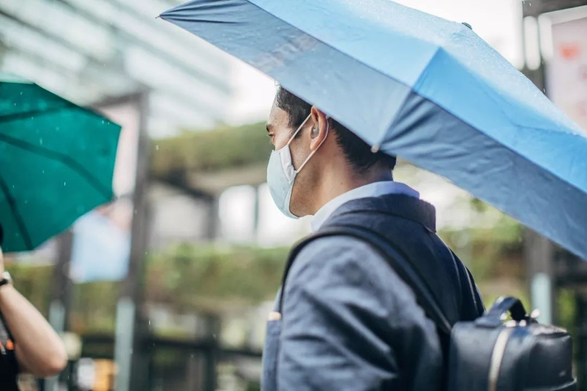
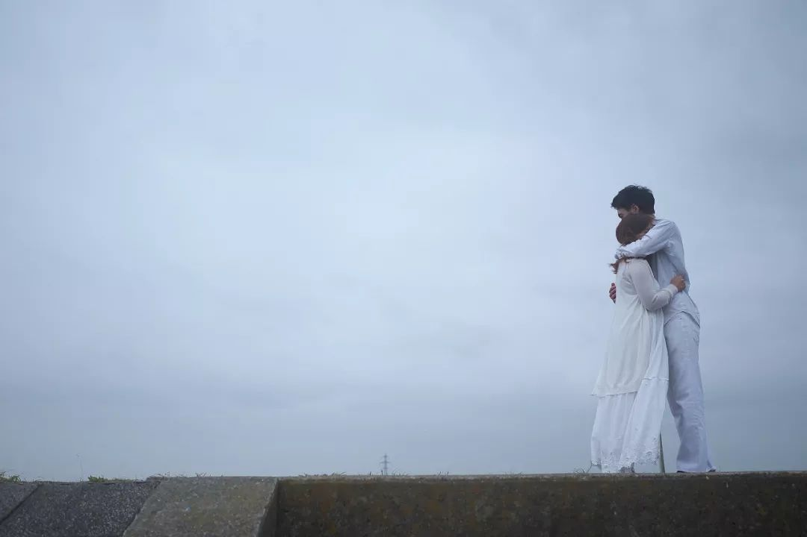

回武汉第二天封城、发烧，一个青年导演的自救口述
原文链接 备份链接 *************▲*************1月29日，钱珵戴着用文件袋改装的面罩，在医院抽完血后自拍。 （受访者供图/图） 全文共4492字，阅读大约需要10分钟。 这次疫情有影响到我最近写剧本的内容， …
这一周，有超过500位读者同我们分享了自己关于爱的故事。今天，我们选取了其中的一些故事，以配合这个名为「情人」的节日——今时今日，这一天似乎看起来不合时宜，但正是因为今时今日，我们才该庆幸，还好，我们还有爱情。
策划｜****《人物》编辑部
“
肺炎时期的爱情
爱与不爱，口罩为证
”
@皮皮霖
2.14情人节，他说今年不能买花了，问我怎么办？我说那就不买了呀，然后我收到了他画的油画玫瑰花……感动。还有他买到了9个N95口罩，给了我家5个，他家才4个，感动！
@阿喵
男友在韩国学术交流，听说国内的疫情后，一句韩语都不会说的他买空了一家药店的KF94口罩，越洋快递寄给家人和我。他自己打趣说，买礼物的上千块钱几乎都花在了口罩上，担心家人担心得整天睡不着觉。我很想念他，但万幸他身处的地方比我们都更安全一点。想见他，却又希望他在韩国呆得久一点。春天总会来的，我们都要健康平安。
@曾是鱼鱼周的小乔
前男友是湖北荆州的。我们已经分手一年多，也拉黑了彼此的微信。我在1月20日武汉封城之日，给前男友的妈妈发去了问候，祝他们新年快乐，幸福安康。虽然没得到任何回应，但是我做了自己想做的事。毕竟前男友以前给我买的N95，解了我的燃眉之急。
@Ayumi
他四处出差，我宅在家。分手了，疫情最危险的时候我选择从北方飞回南方。他没有一句嘱托，微信给他道别，只回了短短四个字「一路平安」。他有很多口罩，没有主动分我，但这不是分手的原因，只是压死骆驼的最后一根稻草。
@艺升
分手时，她带走了我所有的口罩……

图源视觉中国
“
肺炎时期的爱情
或耳鬓厮磨，或相看两厌
”
@小林
作为一对今年1月刚开始同居的情侣，我们过了一周新居采办的忙碌，过了两周日常工作餐偶尔在家下厨怡情的亲密生活，过了春节的相思，却过不去日日相对的烦躁！谁洗碗，谁打扫，为什么睡懒觉，为什么不起床做早餐，各种小事，在24x7的生活中全部暴露。现在的我，只想，快点上班。哈哈哈哈哈哈。
@司命
我俩正月初一就回了北京，在一起过了个孤独但是两人互相陪伴的春节。因为闲的太无聊，每天约定晚上睡觉之前打一架，就是那种真的揪胳膊拽腿那种，不疼，但是累。古人诚不欺我：打是疼骂是爱，拳打脚踢谈恋爱。
@咩咩
原本以为可以耳鬓厮磨，亲密无间，趁着机会好好培养感情和默契，成为对方舍不掉的另一半，结果……因为距离太近大打出手，吵架日渐频繁，三天分手两次，又迫于无法彻底分开而暂时复合，觉得是被疫情捆绑在一起的可悲的一对。
@花花
都在互联网公司以前工作很忙，工作日一顿团圆饭吃不上。现在24h在一起，每天要一起做三餐。思考明天吃啥，成了话题。对婚姻和伴侣有了新的领悟，人生很长，这段路不太好走，所以才要两个人牵手。是亲密爱人，也是亲密战友。
@机智的小张
好巧哦，去年正好把婚结了。连续24小时待在一起20天了，我估计下一次只能等退休了哈哈哈哈。买菜做饭做家务充满烟火气，希望一辈子顺畅平凡。
@张
先生平时很忙，基本上回来能做的事就是吃饭、上厕所，一度以为可能我们也就如此吧。可是由于疫情爆发，今年过年先生哪里也没有去，一直和我和孩子呆着，元宵节那天，先生买了很多菜，做了好多菜。下午的时候先生泡好了茶，端给我，他坐在凳子上，我挨着他也坐旁边一凳子上，我斜躺他肩上，他搂着着我看着手机，顿时觉得日子很平淡但也很真实美好，孩子在客厅里玩着，看着阳台外的绿植都觉得可人多了……
@皮卡皮
我们俩是武汉的一对情侣，谈了近6年。他回家的那天正好赶上封城，我也因为在汉口上班，去过医院，之前也没做过防护，不敢回家，于是今年就是我们俩一起过年了。我们感情挺好，在这之前的每一年都在盘算啥时候我们才能一起过年，万万没想到，第一次一起过年，是以这样的方式。在确定封城的那一天，我们戴上口罩，去超市囤了不老少东西，虽然疫情严重，但年还是要过的，我们一起买了除夕的火锅材料，还有过年的福字窗花。平时由于工作的原因，我们俩其实并不能一起完整地度过一天，这次由于疫情的原因，我们已经寸步不离呆了近一个寒假的时间了，我们并不腻烦，我们一起打游戏，看剧，运动，做饭，规划食物储备，这都让我对我们的感情更加确定，让我觉得对方就是那个一起过日子的人。在这场灾难中，我们无疑是很幸运的，我们没有被感染，也更确定了对对方的感情。
@思璐
与老公闭门不出，朝夕相处19天了，庚子年正月十七。北京。圆月。积雪。与老公闭门不出，朝夕相处的第19天。没有离婚，没有掐死对方，或可白头偕老。

图源视觉中国
“
肺炎时期的爱情
挥别错的，确认对的
”
@士郎
疫情还没结束，我的爱情却结束了。我们分手了，她分得很干脆，说不想浪费我的时间。说不难过是假的，提分手的时候我恰好在医院被确诊为疑似病例，这突如其来的信息，更是让我雪上加霜。我没忍住，在医院门外哭了一场。哭完后继续接受医生的检查，我尝试想要去挽回，但都以失败告终。现在我正在医院被隔离着，等候着核酸检测的结果。虽然我们分开了，但我还是希望你在那边要好好照顾自己，愿你一切安好。
@REVIR
因肺炎而隔离的日子里，我才发现我那么爱他。
我们在肺炎爆发前分的手，他在深圳，我在珠海。
他是医学生，在深圳的医院实习。我放假在家。
肺炎刚爆发的时候，心里开始隐隐担忧，因为知道实习生年过是要留在实习医院的。但嘴硬着，不闻不问，并没有想过自己会为了曾经的爱人而整夜整夜的无眠。
疫情越来越严重，深圳成了广东省病例最高的城市。过年前的一天，绷不住了，给他发了短信，他没有回我。
一条、两条、三条……互相删除好友之后，我没法再找到其他更好的方式和他沟通。
感谢神灵保佑，他很好，过了许久，他回我了。他说他很忙，他会照顾好自己，谢谢关心，没有必要再联系。
我希望他平安，所有医护工作者，所有医学生都照顾好自己，像他说的那样。
我知道他会平安，也知道他会和另一个女孩恋爱。
希望疫情结束，有情人终成眷属。
@刘阿阿
不是，你谈个恋爱，一搞一个月了你一个电话都不打？我打电话问为什么不打，他说没话讲，我说可是我感觉我有很多话呀，你怎么就没有呢，他说我闷些呗？然后就真的一句话没讲，他不讲我也不讲，就空了有五分钟没讲话。然后他说要去洗澡了，就去洗澡了，也没再回什么。结果，第二天，就跟什么都没有发生过一样，给我发微信，我没回（因为有点生气，就想他主动给我打个电话），之后的一个星期，每天给我发一条微信，我都没回。今天因为是他生日，我就发了一句生日快乐。他说你终于回我了，我还以为你被隔离了。我说，是被隔离了也没见你打个电话确认一下。他还是说：「我没有急事一般不打电话，一向这样。」我服气了。十年前的初恋，今天分手了。
@哈哈哈
我是单身狗，哈哈哈，刚分手了半年多。但我的前任是湖北人，所以疫情爆发后，我左思右想、坐立不安了几天，最后忍不住发了一条短信给他。然后，也就没有任何回音的然后了。
@小七
其实还没有正式在一起，但这个春节因为这场战役好像两个人的心更贴近了。他是交警，我是志愿者，都在卡口24小时值班，站岗休息的时候我们都有聊天讲笑话互相打气，有一种并肩作战的感觉。虽然我暂时还不能将它称之为爱情，但还是希望我的陪伴可以给他带来一点温暖吧。即使没有正式在一起，好像因为这次对他的工作有了更多的理解，希望这场疫情快点过去，结束以后的第一件事就是带他去吃我最爱的一家早餐店。
@郭当家
为协助公司进行宣传工作，到过公司宿舍的隔离区，并且四处拍照走访，接触了很多人。结果当晚就发烧了，心里十分害怕。自己把自己隔离了起来，什么吃的都没有。他从家里、外面帮我买了很多食物、水果、消毒水。我让他放在门口就好了，万一真的得了怕传染他。他说，要死一起死。然后默默地帮我彻底打扫了卫生，用消毒水拖了几次地板。还帮我把鸡洗了，把鸡屁股剁了。这是我第一次见一个90后的男生剁鸡屁股。4年了，终于觉得这是值得我托付终身的男人……
@Circle
当我们十八线小城市有病例出现的时候，他怕我会有风险，也不敢让我坐飞机，于是一个人开了2000多公里去接我。除了加油、上厕所之外，都不下车，害怕会有感染的风险。买的东西只吃了一份自热面，一些糕点，但是喝了超多红牛。到了之后，帮我装了行李，去超市买了吃的，没有停留就开车走了。回来的路上，拉着我一直说话，怕睡着，但是不想再喝红牛了。从东北到西南，异地的爱情，虽然才恋爱两个月，虽然有七岁的年龄差，但是，这个冬天特别温暖，这个人特别想嫁。
@小曼
我和他是去年5月认识的，他是四川省肿瘤医院ICU的护士，我是一名在校研究生。我俩家庭条件都很一般，再加上成长经历和学历的差异，我们俩的感情一直不被看好。去年11月，我们分手了。
2月1日，他报名参加了四川省第三批援鄂医疗队，临出发的那天晚上，他分享了丈夫喊话奔赴武汉一线妻子「你平安回来，我承包一辈子家务」的视频给我，对我说「今后，我们各自珍重」。3号晚上，他说他们被安排在武汉大学人民医院，接管重症患者，每天六班倒，穿防护服不到一个小时衣服全都湿透了，附了一张穿防护服并竖起大拇指的照片。我默默看着照片，虽然心疼得要命，但「注意保护自己」简单几个字，话到嘴边又被我咽了下去。
李文亮医生离开的那天，心痛到了极点，看着照片中那个鲜活年轻的生命，再也忍不住对他的担心和牵挂了。「叮～」——我试探性地问候着他，他很快回复我「这边很好，吃住都蛮习惯的，我们每天都打胸腺肽，防疫工作做得非常仔细……」
今天，他和同事一起剪了「卤蛋头」，脑袋亮亮的一颗，你一定要好好的回来，等你回来一定就是春天了，这个春天我们重新开始！

图源视觉中国
“
肺炎时期的爱情
再难也要好好吃饭
”
@小雪
其实没有肺炎，我们也是异地，他在北京，我在广州。也是靠手机，这老土又磨人的异地恋啊。不过我家粮食储备充足，他有点缺乏，所以我寄了一只鸡给他……我觉得这可以回答「送过给男朋友最奇葩的礼物」了，我们原本就没有很经常见面，原来说觉得自己适合异地恋，现在才知道多天真。因为想他，所以想见他。
@有理姐
另一半是交通系统的，日夜都在前线值班，我们已经有十天没见面了。我从结婚生孩子到现在，几乎没做过饭，都是老公在做。因为疫情，我们一家三口被隔在三个地方。老公不在，外卖没有，我只能自己做饭了。好好吃饭，是对这份爱负责，也是对这个家负责。慢慢的，我也掌握了很多技能，憧憬着当老公一个月后从前线回来我给他做饭的场景。这就是我们的爱情，都在一粥一饭里了，如此平淡而真实。
@大的小
男朋友是工科生，我在医院实习，我们从12月底开始每次见面都非常注意防护了，我以为他开始防护是因为（防）我。在1月19号那个周末我们离开之前的一周，他突然开始炖鸡汤给我喝，甚至离开前一天早上带的早餐都是鸡汤，后来我才知道是他从不知道什么公众号看来的，说喝鸡汤可以提高免疫力。
@路人npc
我家和他家相隔大约600米，因此隔离的日子，我的恋爱就是，我戴着口罩去他家吃饭，他戴着口罩来我家吃饭。插曲就是，绕着全城找个开着的烤肉店无果，回去点了个烧烤外卖。现在想想，感情全靠吃……复工后，他一个人在外地，居家隔离，我怕他饿死，就每天提醒他做饭。好像也没离开吃…… 也不知道算不算爱情，超大龄的年纪遇见了喜欢的人，相处之道是：我们能互相尊重对方的不同。不知道他有没有比昨天更喜欢我，我有更喜欢他。
“
**肺炎时期的爱情
**
忽远忽近，牵肠挂肚
”
@浅步调
他在武汉的医院上班，一线，我在老家过年，已经20天没有见面了，想过去陪伴他，但是路封了，而且他为了保护我，坚决不同意我回武汉。他在武汉的医院上班，检验科，今晚是他的夜班，医院会收治830名危重症新型冠状病毒感染的患者，应该是一个无比繁忙的夜晚，希望他平安。
@KK小姐
男朋友是交警，从腊月二十八开始他就没有休息，一直在一线岗位。不值班的时候他就在我们小区栅栏外面给我打电话也只是远远的看看，他说他每天接触的人太多，不让我走近。今天烤了蛋挞隔着栅栏给他，拉了拉手……哭了，我太难了。
@核变薯条
李文亮医生走的那晚，接近崩溃，他电话打过来，说在家很闷，睡不着，开车出来散散心。时间凌晨三点左右，两人漫无目的扯淡。太冷，他穿的拖鞋短裤，叫他别耽搁赶紧开车回家。回程，他说你念首诗给我听吧。想起看完《银翼杀手2049》脑海冒出的也这几句：感觉自己在孤岛上/岛的四周是/很深的拒绝或是厌倦/才能形成的那种蔚蓝。他很喜欢，又念一遍。一会他说要不视频吧，给你看看回去的街道景象。车里黑暗加上挡风玻璃，画面模糊不太真切，四周都黏着一层雾。路灯像星星浸泡进了海水，混沌朦胧散发着光晕。他有一搭没一搭哼着《十年》。当时我就在想，可能若干年后，仍然把那晚，看做一场无奈心悸，浪漫的大冒险。
@王居
和男朋友高中同学，家都在深圳。上大学就开始南北方的异地生活，我在北京，他在香港，如今是第五个年头。因为都在读博，短暂的寒暑假14天是最宝贵的见面时间。2月1日他像往常一样准备回香港，我送他到小区门口，因为疫情，没有拥抱没有吻别就让他走了，想着很快就会见的。紧接着，2月3日，香港发出封关消息，男朋友安慰我，还剩一个偏远的关口可以走；2月5日，香港发出所有到港人士强行隔离14天！我知道他回不来了，但我仍旧抱有希望这个政策应该会很快结束；2月7日，香港发文，政策实施到5月7日结束。接连3个消息，我哭了3场。非常时期大多数情侣过成了异地，而本来就是异地的我们，又该如何去承受。但其实我难过更因为2月1日走的时候至少该抱抱他，就那样让他走了，谁知道再见就是100天以后。
@木棉
异地恋。在原本的计划里，这个春节是我们密集相处的难得机会。我们安排好了几乎每一天的行程：逛街，爬山，吃小吃，看电影……直到突如其来的瘟疫把一切计划全部打乱。
过年前，我们匆匆见了一面。第二次见面，是年初五。出门前，我妈往我的包里塞了一大包口罩，一包手套（是吃龙虾的那种塑料手套），还有一盒酒精棉片。我就像一个装备齐全的护士一样出门了。
商场都关闭了。学校的图书馆、实验室和教室也都关闭了。约会无处可去，我们像在打第一人称视角的末日游戏，游荡在街头，绕着学校散步。由于害怕感染，我们不敢摘下口罩，牵手也要隔着两层塑料皮。我俩都是近视眼，口罩戴久了，眼镜就雾蒙蒙的。我抬头看着他说，「起雾眼望起雾眼」，他回我：「蓝口罩吻蓝口罩。」
希望疾病能够快快消失不见。耐心等着春暖花开的那天，摘下所有防护的那天，再次见面的那天。有生之年，我再也不想隔着口罩吻你了。

图源视觉中国
“
肺炎时期的爱情
无论如何，我一直在
”
@小王
男朋友确诊了肺炎，眼看着他从最初的心理崩溃到现在渐渐稳定，在这段时间里，我能做到的，我想只有陪伴，永不离去的陪伴，让他知道我会一直在。
@忆芬小忆芬
男朋友是个钢铁直男，疫情期间，我老是噩梦连连。于是他每晚跟我讲一个小故事，我都能在5分钟内陷入昏迷。男朋友几年前曾经生过一场大病，症状有点像新冠肺炎，在ICU躺了1个月，从阎王爷那里逃了回来，住院9个月才治好。但是留下了后遗症，肢体落下了残疾，原来的辩论队选手到现在说话都不利索了。好在，他还活着，除了动作奇怪，表达吃力，他无病无痛。我的父母自小宠我，对这段感情百般阻挠。然而，2年多过去了，虽然互相未见面，男朋友的正直、踏实，父母已经知道了，他们不再担心我们了。妈妈一边嘴里说着，你男朋友看起来傻傻的太笨啦，一边又把男朋友做的vlog连看了5遍。
@邓女士
因为我是医生，老公还在读博没毕业，年后单位要求迅速回成都待命，我们还没有买车，他小心翼翼开着表弟的车送我回蓉，本来是在家更安全，最严峻那几天他又摸回成都了，说不能丢下我一个人，他给我做饭。今天值班，他非得送饭到医院，打开是超大份量，我跟科室另外一位同事分享都没吃完，水果也装在饭盒里，切好的苹果和梨都氧化了，黑黑黄黄的。他回去才跟我说，怕我吃不饱，做的菜全送来了，自己吃的剩菜。昨晚骗他说怀孕了，可是我们两个这么穷怎么办，我看他眼睛一下就红了，眼角湿润，他居然很尴尬说眼镜戴太久，眼睛会莫名其妙地流泪。老公啊，生活又难又甜，活着就好，活着就无限可能呢。谢谢你的陪伴和支持，爱你，就是这么平凡的爱情。
@Kami
男朋友在深圳工作，1月14日回武汉，他回家没几天武汉就封城了。原本以为这种事情不会发生在我们身上，直到2月2日他爷爷感染新冠病毒去世。祸不单行，第二天奶奶也感染了，但由于住不进去医院只能在社区医院吸氧，那天晚上我们俩到处求助，在微博超话发帖，给人民日报发邮件，各种打求助电话，终于在第二天早上让奶奶住了进去。他家里还有患癌的爸爸，需要一种缓解疼痛的药物，这种药只有香港和德国有，屋漏偏逢连夜雨，就在我们用尽所有关系联系上代购的时候，香港宣布封关，所有快递公司都不接单。那天我们一直在找人帮忙人肉带回，直到深夜。他终于憋不住在电话那头哭了起来。后来总算联系上人在香港买药，然后辗转寄到武汉。
武汉是疫情重灾区，他出去买个菜都要把自己裹得严严实实，而我家这个小村庄大家一点防护意识都没有，该聚会聚会该打牌打牌，他听到之后很气愤直接打电话把我们村支书举报了，村支书刚好是我爸爸，于是女婿举报岳父的事一下子在村子里传开。
前几天睡前和他边打电话边看《霍乱时期的爱情》，我问他我们现在算不算霍乱时期的爱情，他苦涩一笑:「没事，至少这场疫情不会持续五十年，一切都会好起来的。」
@一君
网恋，变成了彻彻底底的网恋。热爱学习的他每天给我发两句话然后不等我回复就紧跟一句「我去学习啦，看书啦，查文献啦，写论文啦」。昨天凌晨两点多，我在刷剧（他以为我早就睡了），收到了他的语音，中途醒来的他发了两句话「嗯…我醒了，我继续睡了，晚安」，这句话我根本不想理，打开播放器继续刷，谁想他后面又跟了一句「我真的，好想你啊」，迷迷糊糊的状态加上他本来就奶的音调。瞬间泪目。
@大炮小可爱
我和他住同一小区，我是医院的一名小护士，过年期间几乎天天上班，每天都在接触病人，也怕万一自己身上沾染病毒，所以都不敢接触亲人、朋友，也包括他。
记得初十那天下夜班，回到家一觉睡到下午，男盆友发消息问我饿了吗，说帮我点了外卖，由于疫情期间外卖都只能送到小区门口我这人又懒得下楼取，我就说不用了在家吃泡面就可以。结果他说这家可以送到，他自己刚刚也点了。半小时后开门只见着门边的饭菜，什么人影都没看到，打开饭盒我才发现，这不是他最拿手的青椒肉丝吗？！这顿饭我是泪流满面吃完的，因为他是除了爸妈之外唯一担心我有没有好好吃饭的人，这是特殊时期全世界唯一送货上门的「外卖」啊。他从不会说甜言蜜语，却是个实实在在的行动派。
由于某些原因我爸妈不太同意我俩的事，但疫情过后，我会牵着他的手勇敢地站在我爸妈面前。网上都说疫情过后第一个要见谁谁，要去干啥，他却用行动证明了，此时，此刻，我们能为爱的人做些什么。
@谭女士
老公因公在宾馆隔离，我们开着视频，各自该干嘛干嘛，孩子告诉爸爸，妈妈想爸爸，又告诉妈妈，爸爸想妈妈。我们都没有说过想念对方，但家里有了爱的传递员，我们仿佛真的又恋爱了，真的开始想念彼此。

图源视觉中国
“
肺炎时期的爱情
愿你我永远都有爱的勇气
”
@kingo
不是这次新冠肺炎可以吗？非典时期的爱情。2003年非典，在读研究生，封校不能回家——而我是个每到假期第一时间回家的独生女。我家在武汉。是的，我家在武汉。大学在东北，封校期间学校建议多运动，每天寝室三次消毒，大家都到各学院被分配的运动场上活动，认识了其他学院的男生。其实有好感的是一个，最后向我表白的却是另一个。我喜欢的，年上、猛男；他，感觉年下、书生。所以当时我几乎算是没发觉更无所谓在意，封校一结束拎上包就回家了。他问遍了认识的人，找到了我的联系方式，过来打招呼的时候还被我叫错了名字。现在我们结婚16年，女儿12岁。女儿和我母亲今年回了武汉过年，现在被困愁城，好在身体无恙。我和他在工作地相依为命。望一切安好。
@王园园
我是在读医学生，他在一家医院工作。我们恋爱一年多，1月18号他送我去汉口火车站，那天阳光灿烂，我们隔着口罩吻别。后来疫情爆发，武汉封城，形势一天比一天严峻。今天，他告诉我，被抽调去分院区的发热病房。我突然想起去年除夕夜，他写给我的信中有一句话：你正是花⼀般的年华，⾯临着未来⽆限可能的璀璨以及迎⾯⽽来职业奉献的艰⾟。健康所系，性命相托，此刻我清楚地明白了这句话的含义。与他相识相伴的日子，无比甜蜜。希望下次见到他时，我们可以扔掉口罩，在阳光下拥吻。
@点点
我们只能通过视频文字聊天，但不是因为肺炎隔离，而是因为异地恋，相隔7000公里从未见过面，还有一个月不到就一周年了！你们疫情结束就可以见面了，我们疫情结束后还是视频文字聊天！我们都在坚持，你们有什么理由可放弃！
@夏瑞
没有另一半，离异人士，有娃。在疫情面前，看到了那么那么多感人的爱情，我知道这个世界，还是有真爱的。我该放下我的初恋了，放下和前夫的感情，重新去相信，去追寻。我相信我会遇到真挚的人。
@天成
2月份之后，我们接连得到的消息是全城城际公交暂停，出入一切公共场所必戴口罩，超级传播者出现，肺炎病死率逐日增加，全城高校推迟返校……于是我们果断在2月5号领证了，当天宣誓环节被取消，我们只留下了一张双双戴着口罩的纪念照。这是我们肺炎时期的爱情，恐怕也是我们青春的回忆吧。
@L
五年前，2016年的夏天，我第一次见他。某一个瞬间，突然让我很心动。因为认为自尊心比一切都重要，害怕自己被拒绝，又以为两人总会有再有交集，也许还有机会自然而然。可是从此再也没有见过面。五年过去，越往后走，越发现能遇到让你心动的人多么不容易。这次疫情第一次让人感觉如此的人生无常。于是，豁出去了，主动和他联系了，约了疫情结束后一定见一面。我的故事很简单，也未必会有美好结局，但……希望大家都不遗憾地活着。

图源视觉中国
生活终将回到原来的轨道，就像爱情一直都在。我们期待春暖花开的时候，去呈现爱情最美的样子。
自2003年创立之初，「相信爱」就是后古婚纱摄影的信念。疫情当前，后古婚纱摄影决定尽一份力，面向全国征集新冠肺炎抗疫一线医护人员，公益赠送100套婚纱照，以这种特别的方式向在这场战「疫」中凯旋的的人们致敬。也希望由于疫情而与爱人暂时分别的人们，距离脱下防护服、穿上婚纱礼服的那一天，不会太远。
爱有千万种模样。在非常时期的大背景下，平凡人的爱情有了跨越山海、超越生死的力量。
而我们能够做到的只有相信。相信这一刻的承诺是真挚的，相信所有爱情都能永恒，也相信，春暖花开的日子即将来临。
点击图片，报名参加此次活动👇

没看够？
长按二维码关注《人物》微信公号
更多精彩的故事在等着你

原文链接 备份链接 *************▲*************1月29日，钱珵戴着用文件袋改装的面罩，在医院抽完血后自拍。 （受访者供图/图） 全文共4492字，阅读大约需要10分钟。 这次疫情有影响到我最近写剧本的内容， …
原文链接 备份链接 点击上图，一键下单** 【武汉现场：抗击新冠肺炎】** 记者 | 吴琪 我从没见过这样的汉口火车站。 1月23日，大年二十九。上午8点40分、50分，墙上的时钟往前走，随着一拨拨人上车，庞大的候车大厅，像被一支巨大的 …
原文链接 备份链接 封城已过去一周，在这个谈武汉人、湖北人色变的时候，我们想要好好看一看他们。今天我们挑选的几篇读者来稿，围绕着湖北的武汉和黄冈，讲述他们在旋涡和风暴中心的日子。他们有些住在城市，有些住在乡村和小镇。环境的不同给了他们不 …
原文链接 备份链接 这是一场无法预知开始、但也许可以看到结局的抗击疫情特殊战役，它不仅仅是疫情爆发地汉口的战役，更是武汉及周边，湖北、乃至全国的战役 文 |《财经》记者 房宫一柳 黎诗韵 管艺雯 宋玮 高洪浩 余洋洋 陈晶 实习生 张凡 …
原文链接 备份链接 大家好，我是田静。 这几天因为新型冠状肺炎病毒，我恶补了一些相关书籍，再看网上真假难辨的信息，觉得阿尔贝‧加缪的《鼠疫》中说得很对：“我们每个人心里都有瘟疫，没有一个人，这世界上没有一个人是免除得了的。能够对抗瘟疫的， …